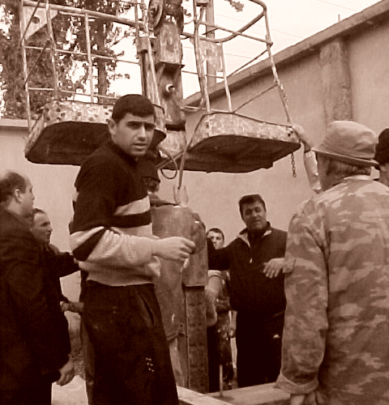
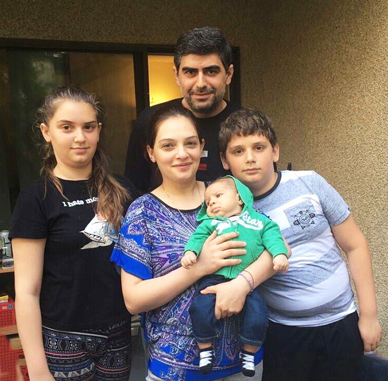

Bio
On October 21st, 1977, an Artist was born in Armenia, Yerevan.
Since his childhood, he was intrigued and fascinated by the Armenian art culture and inspired by vividness and beauty; Zare started drawing, painting and sculpting. Throughout the years, his passion was more and more focusing on sculpting. At the age of 16, Zare participated in many art exhibitions where his works were getting noticeable and attracting spectators admiring the culturally inspired art. His passion for sculpting was so emphatic and natural that he was admitted and attended the best Armenian sculpting school for University.
At the age of 21, Zare had earned his Master's degree in sculpting from the State Academy of Fine Arts of Armenia. After graduating from University, Zare spent many years putting in extra effort to become the best in his field. As a result, at the age of 26, he became the first prize winner of Pop of the Xl International Biennale of Bronze Sculpture for "The Cromlech time of Time '' sculpture. In 2005 he became a member of the Artists' Union of the Republic of Armenia.
Zare resides in Richmond, BC with his wife and their three children. Karina and Hayk are studying at school yet, but in their father's interpretation they start perceiving what are the stones speaking about. The time will come and they will fully understand this fine and exceptional way of their father's self - expression and that he is going to say his own word and make his contribution in the history of Armenian sculpture.
Since then, Zare has been perfecting his wood, stone, bronze, and ceramics skills. The most important fact is that Zare is a perfectionist with a limitless passion for his art. His immaculate and diverse skill set using different materials reveals his joy of sculpting every second of the day.
Today, Zare spends all of his free time working with clay to make ceramics. Some of Zare's best work includes unique pieces of plates, bowls, decorative salt cellars, cup sets (coffee or tea), and wall sculpted ornaments that have been inspired by Armenian culture.
Most of Zare's work has been put up in art exhibitions and is being sold worldwide.